Azure DNSSEC | yasserlab.xyz
| Project Category | Cloud Security / DNS Security |
|---|---|
| Platform | Microsoft Azure Public DNS and Dynadot |
| Core Technologies | DNSSEC, DNSKEY, RRSIG, DS, PowerShell, Linux dig |
| Domain | yasserlab.xyz |
Project Overview
Configured DNSSEC for yasserlab.xyz with authoritative DNS hosted in Microsoft Azure and domain registration managed through Dynadot. The implementation included name-server delegation, Azure-managed signing, DS publication in the parent zone, and independent checks from Windows PowerShell and CentOS Linux. Azure reported Signed and delegation established after the parent-zone configuration was completed.
1. Objectives and Scope
The goal was to authenticate the origin and integrity of public DNS records and establish a verifiable chain of trust. DNSSEC protects DNS data authenticity; it does not encrypt DNS queries or prevent every DNS-based attack.
2. Solution Architecture
The DNS root provides the trust anchor, the .xyz parent zone publishes the DS record, and Azure hosts the signed authoritative zone. Dynadot manages registrar-side delegation. Cloudflare's public resolver (1.1.1.1) was used for validation.
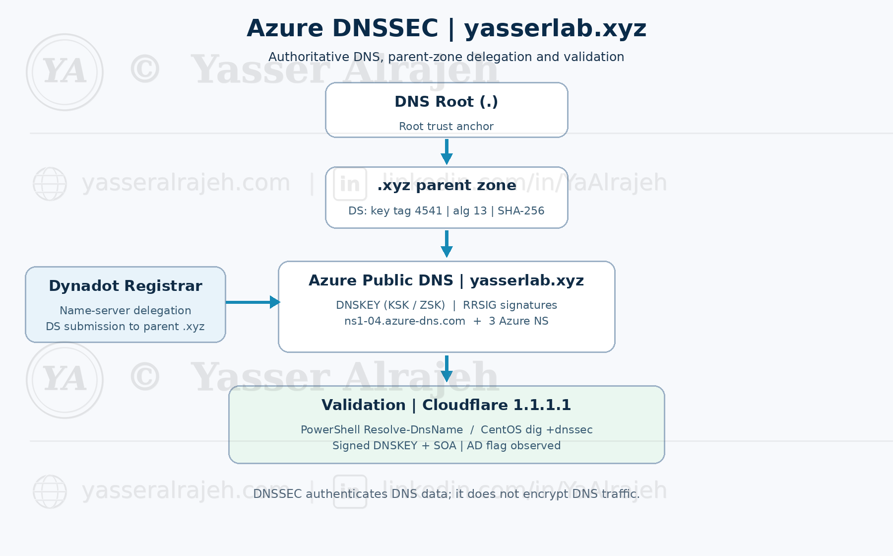
3. Implementation and Evidence
01 | Azure Public DNS Zone Overview
The public DNS zone for yasserlab.xyz was provisioned in Azure. Azure assigned four authoritative name servers, and the zone was managed through the Azure portal.
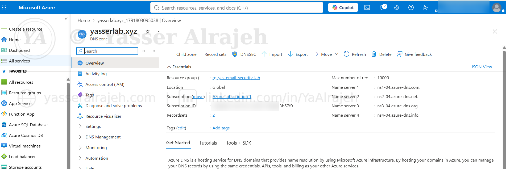
02 | Dynadot Name Server Configuration
The registrar was configured to delegate authoritative DNS service to the four Azure DNS name servers. This is a prerequisite for consistent public resolution.
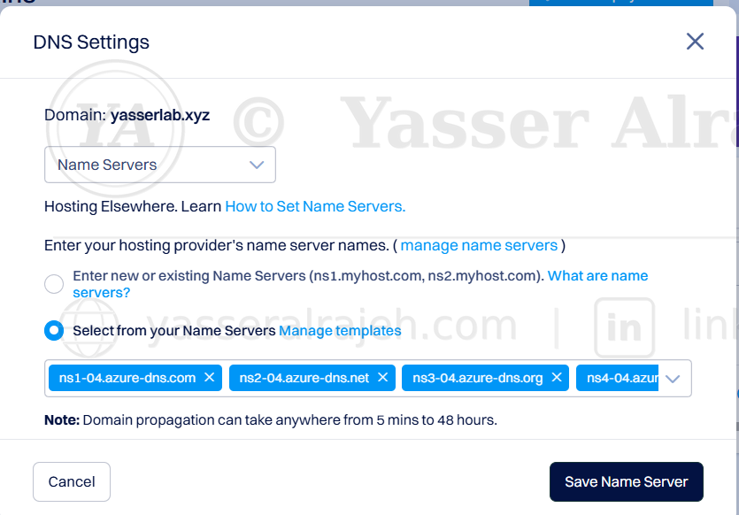
03 | Public DNS Delegation Verification
PowerShell queries against a public resolver returned the Azure authoritative name servers, confirming the observed delegation path.
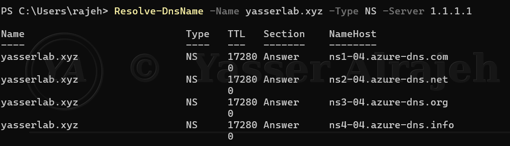
04 | Azure DNSSEC Signing Configuration
DNSSEC was enabled for the Azure public zone. At this stage the zone was signed but delegation to the parent was not yet established, as indicated by the Azure status.
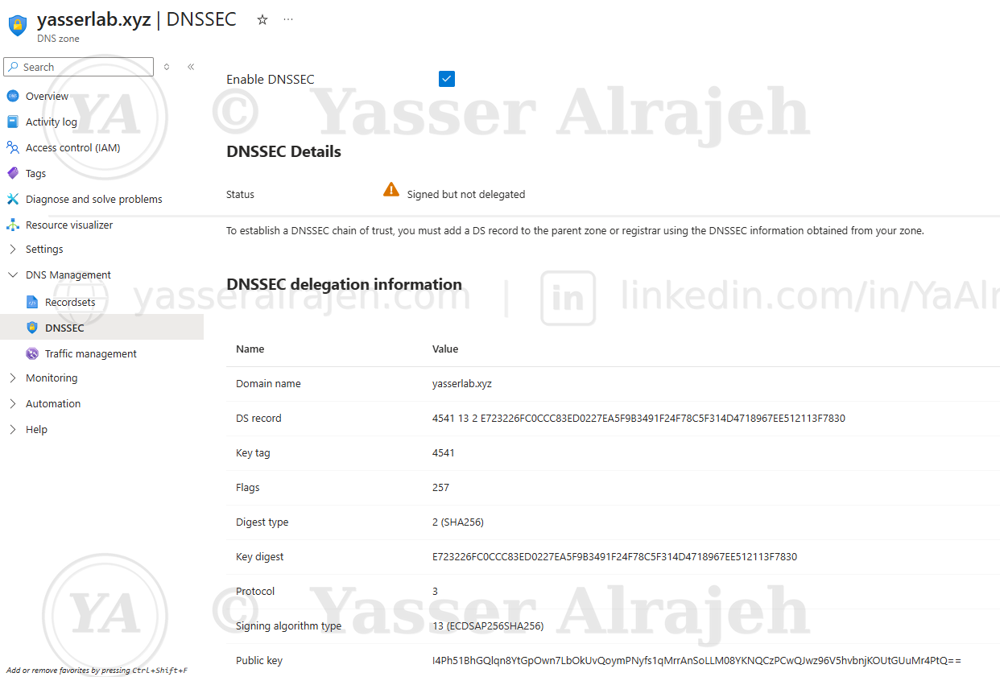
05 | DNSSEC Signing Records in Azure
Azure displayed DNSSEC signing records and key metadata. The DS information was obtained from Azure for submission to the registrar.
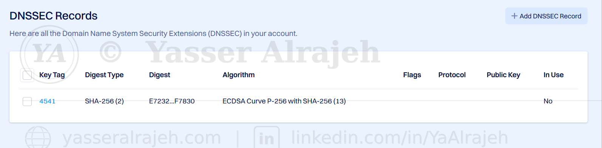
05A | DNSSEC Delegation Established in Azure
After the DS record was published through Dynadot, Azure reported “Signed and delegation established” for yasserlab.xyz. The captured DNSSEC details show the DS key tag (4541), signing algorithm (13, ECDSAP256SHA256), SHA-256 digest type (2), and the public key. This confirms the Azure-side delegation status at the time of capture. The DS digest and public key are intentionally visible: they are public DNSSEC verification material, not credentials.
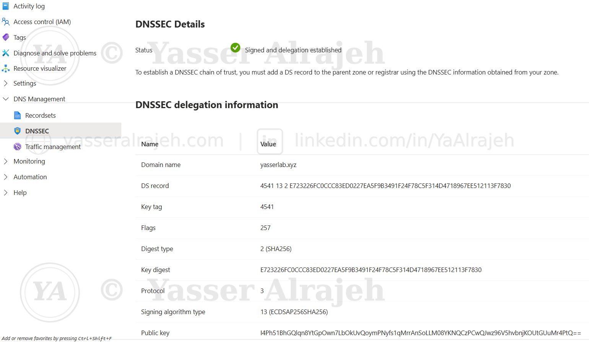
06 | Parent DS Record Verification
A direct DNS query to the parent-zone infrastructure returned the DS record with key tag 4541, algorithm 13 and digest type 2.
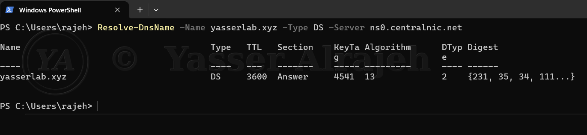
07 | DNSSEC Chain-of-Trust Visualization
The trust-path visualization connects the DNS root, the .xyz parent zone and the yasserlab.xyz zone through DNSKEY and DS relationships.
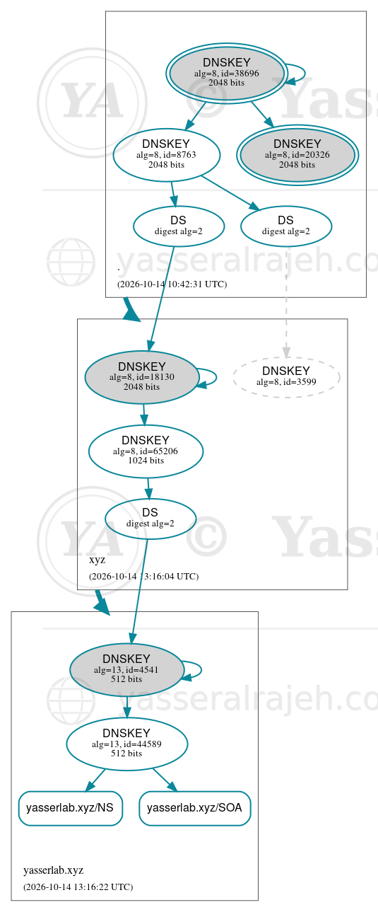
08 | DNSKEY and RRSIG Validation in PowerShell
PowerShell returned DNSKEY records and accompanying RRSIG signatures, as well as signed SOA data.
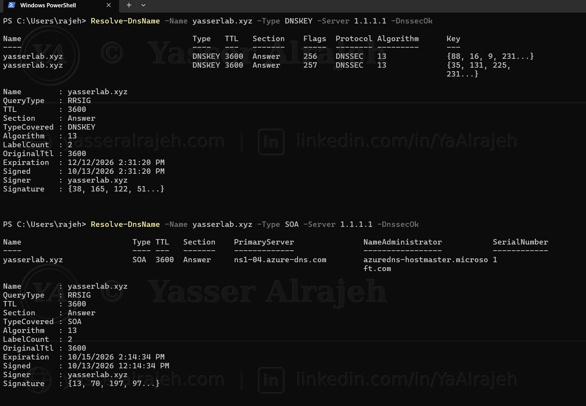
09 | Signed SOA Response Verification
The SOA response was accompanied by an RRSIG, demonstrating that the authoritative zone data was signed.
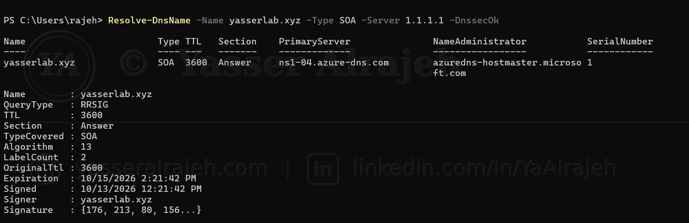
10 | Linux dig DNSSEC Query
CentOS was used to independently query DNSSEC-enabled records using dig and the +dnssec option.
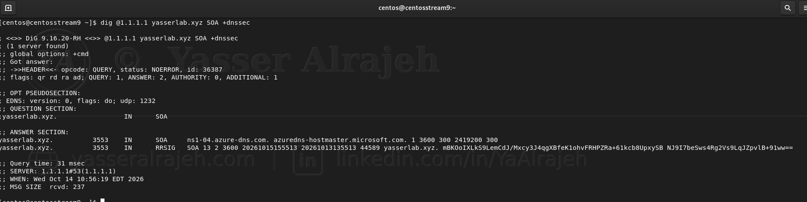
11 | Linux DNSSEC Verification — Additional Evidence
A second CentOS capture records the DNSSEC response and its accompanying signature data.
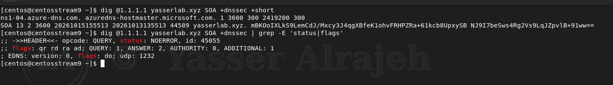
12 | Linux DNSKEY Validation
The DNSKEY query returned the public keys and corresponding signature data for the domain.
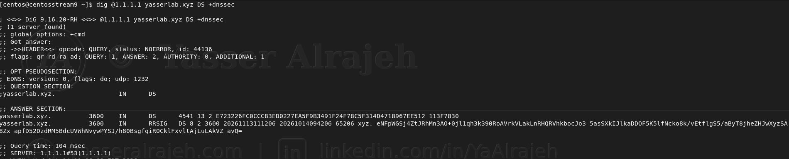
13 | Linux SOA Signature Validation
A signed SOA response was returned, with the RRSIG covering the requested record type.
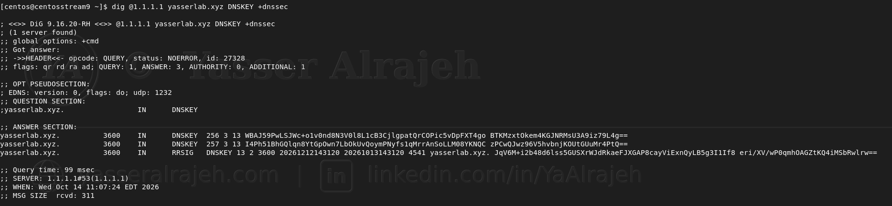
14 | Final Linux Validation Evidence
The final CentOS capture records the DNSSEC-enabled response used to cross-check the Windows results.
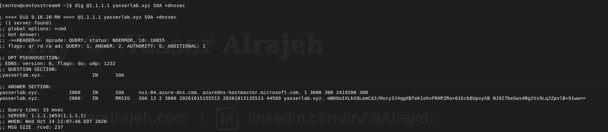
4. Reproducible Validation Commands
These commands reproduce the record lookups shown in the evidence. The +dnssec option requests DNSSEC records; the AD flag from a validating resolver is stronger evidence of successful validation than the presence of RRSIG records alone.
Windows PowerShell
Resolve-DnsName -Name yasserlab.xyz -Type NS -Server 1.1.1.1
Resolve-DnsName -Name yasserlab.xyz -Type DS -Server 1.1.1.1
Resolve-DnsName -Name yasserlab.xyz -Type DNSKEY -Server 1.1.1.1 -DnssecOk
Resolve-DnsName -Name yasserlab.xyz -Type SOA -Server 1.1.1.1 -DnssecOkCentOS Linux
dig @1.1.1.1 yasserlab.xyz DNSKEY +dnssec
dig @1.1.1.1 yasserlab.xyz SOA +dnssec
dig @1.1.1.1 yasserlab.xyz DS +dnssec5. Security Validation and Outcome
The evidence captures Azure name-server delegation, DNSKEY and RRSIG responses, and the parent-zone DS record with key tag 4541, signing algorithm 13 (ECDSAP256SHA256) and digest type 2 (SHA-256). Azure displayed “Signed and delegation established.” DNSSEC validation was observed through the tested resolver paths. These findings demonstrate a working DNSSEC deployment for the captured tests, not protection against every DNS threat.
6. Skills Demonstrated
Azure Public DNS administration, registrar and parent-zone delegation, DNSSEC trust chains, ECDSA/SHA-256 signing, PowerShell DNS diagnostics, Linux dig, troubleshooting, and evidence-based technical documentation.